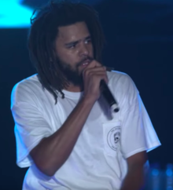

|  |
J.COLE |
is an American rapper, singer, songwriter, record producer, and professional basketball player for the Rwanda-based Patriots BBC |
| Born sinner | ⭐⭐⭐⭐ |
| truly yours | ⭐⭐⭐ |
| Forest hills drive | ⭐⭐⭐⭐ |
| 4 your eyez only | ⭐⭐⭐⭐⭐ |
| KOD | ⭐⭐⭐⭐⭐ |
| The off season | ⭐⭐⭐⭐ |